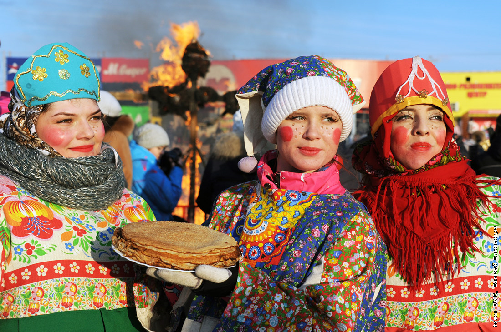
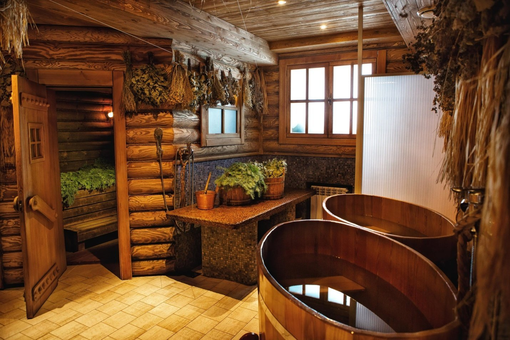
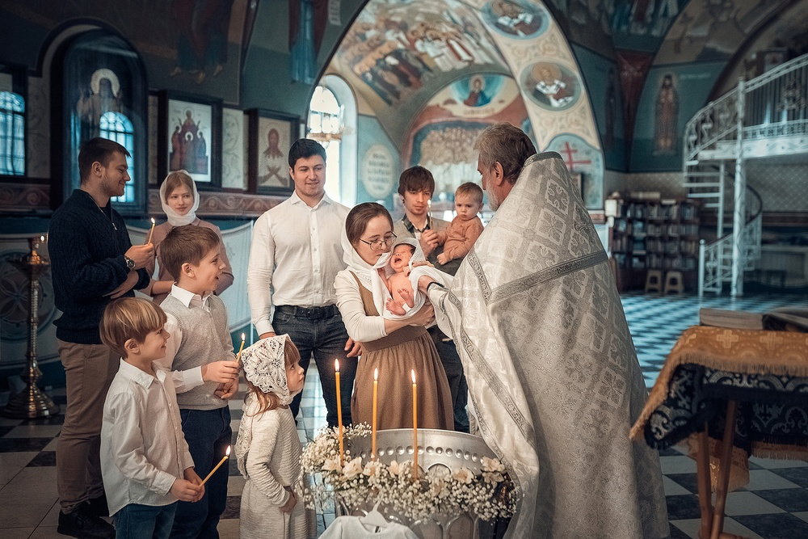

Традиции России
Масленица
Изначально, сжигание масленицы - это ее похороны, а блины - это поминальное угощение. Но русский народ превратил грустный праздник в разудалую Масленицу. Сохранилась традиция печь блины - круглые, желтые и горячие, как солнце, а к ней добавились катания на конных упряжках и санях с ледяных гор, кулачные бой, тещины посиделки. Эти обряды сочетают в себе завершение периода зимних праздничных ритуалов и открытие нового, весеннего периода праздников и обрядов, которые должны были способствовать получению богатого урожая.
Русская баня
Посещение бани на Руси – это непросто гигиеническая процедура, а целый ритуал. Люди шли в «мовню» не искупаться, а духовно почиститься. Баню обязательно посещали перед любым важным мероприятием. Процесс мытья мог затянуться на несколько часов, ведь торопиться в этом деле не принято. Важно посещать баню в хорошем настроении и желательно с друзьями. Еще одна традиция – поливаться холодной водой после посещения жаркой парилки.
Крестины
По обычаю в православных семьях обряд крещения совершается в малом возрасте. Крещение в Православной церкви совершается троекратным погружением с головой в купель со святой водой — во имя Отца, и Сына и Святого Духа. Согласно русской православной традиции, ребенка крестят в младенческом возрасте, предварительно выбрав церковь и крестных родителей.
